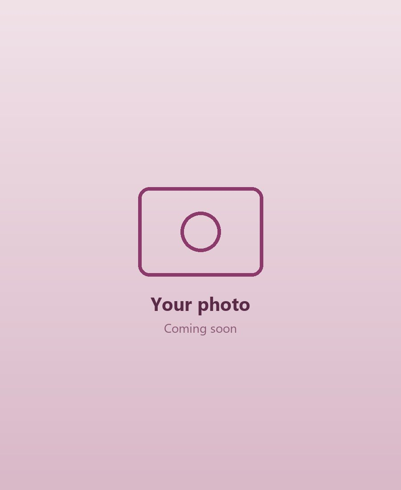

Teaching Portfolio
How I plan, teach and gather evidence of my practice as a Social Studies student teacher.
and Fair

Curriculum Knowledge
Teaching Social Studies to Basic 7, 8 and 9 has helped me understand how the Basic School Curriculum is organised and how each lesson links to the next.
Building My Teaching Skills
What I am working on in my own planning and teaching.
Good Preparation
I prepare every lesson carefully, because well-prepared teachers manage their classes better and make good use of learning time.
Patience with Every Learner
I stay calm and support slow learners, use simple local materials to make ideas clear, and plan activities for learners of different abilities.
Strategies in My Toolkit
Methods I want to use in my own classroom.
Can Succeed
Evidence Gallery
Key pages from my Year Two reflective journal at St Anthony R/C. Select a page to view it in full.

My Portfolio Snapshot
My reflective journal, my mentor's score sheet and the evidence of my teaching practice, gathered in one place.